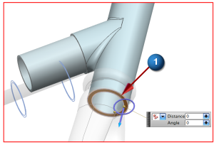
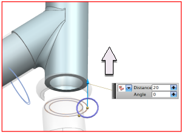

Align the bottom of the headset
The Move Face dialog box is still open from the previous step.
-

 the bottom face of the headset
the bottom face of the headset

-
 drag the Distance arrowhead upward 20 mm to align the face with the top of the bearing cup
drag the Distance arrowhead upward 20 mm to align the face with the top of the bearing cup

-
OK